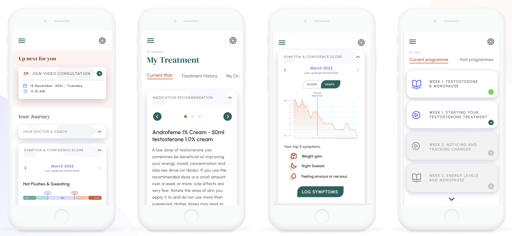
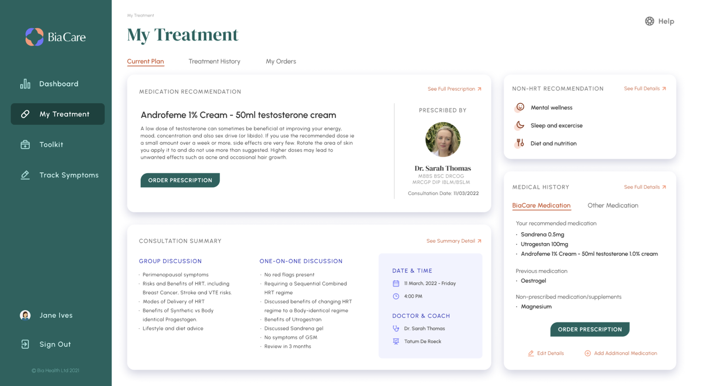

Menopause care
in the UK was broken.
The market was fragmented. HRT had a reputational problem. Women were navigating a complex system with no continuity of care: GP appointments that lasted 10 minutes, or expensive private consultations with no follow-through.
There was no tech-forward, whole-person approach that combined clinical oversight with lifestyle intervention.

The first private
group consultation
clinic in the UK.
Built the full infrastructure for virtual group consultations: patient matching into cohorts, EMR integration, video consultation rooms, clinical note-taking, and end-to-end prescription workflows. CQC registered. Clinical governance from day one.
A team of four. A regulated clinic. Built and launched in months.

We killed a product
with an NPS of 86.
Our first product was a 12-week lifestyle programme. The pilot worked. The waiting list looked strong. But when the time came to pay, conversion was low.
What people said they wanted and what they were willing to pay for were different things. We killed it and refocused on the clinical core.
This failure made me significantly more commercial. Test willingness to pay early. Follow the money signal, not the satisfaction score.

menopause service.
the patient population
and NHS
covered
research award
Technology can scale the clinical care gap. In 2020 I built the regulated infrastructure to prove it, and the NHS commissioned the result.